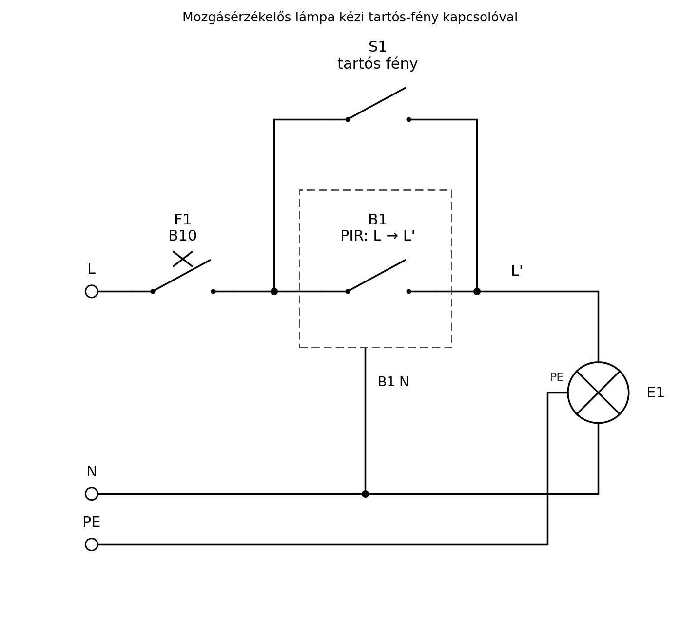
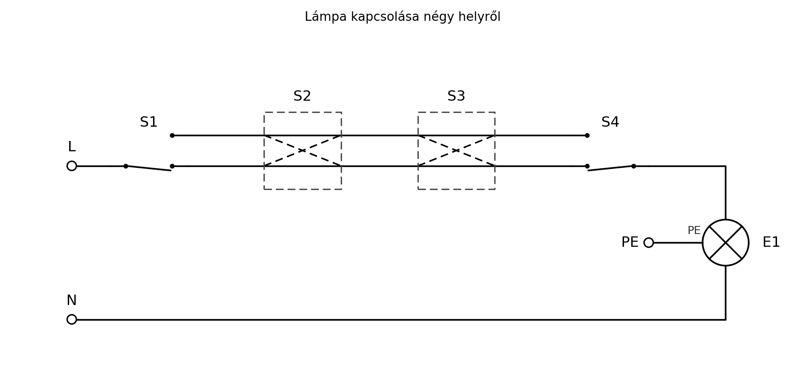

A kapcsolódó elmélet: tankönyv, 40.1 alfejezet.
Adott: tanműhelyi panel, egypólusú kapcsoló, lámpafoglalat, 12 V-os vagy 230 V-os feszültségforrás (felügyelt környezetben), 1,5 mm²-es vezetékek.
Keresett: a kapcsolás bekötési lépései.
Megoldás: 1. Kösd a fázist (barna) a kapcsoló egyik kapcsára. 2. A kapcsoló másik kapcsáról induló barna vezetéket vezesd a lámpa középső érintkezőjéhez. 3. Kösd a nullát (kék) közvetlenül a lámpa menetes érintkezőjéhez. 4. Ha a lámpa testén védőérintkező van, kösd a zöld-sárga védővezetőt. 5. Ellenőrizd multiméterrel, feszültségmentesen, izzó nélkül: a fázis bemeneti kapcsa (L) és a foglalat középső érintkezője között a kapcsoló nyitott állásában ne legyen folytonosság, zárt állásában legyen; a nulla bemeneti kapcsa és a foglalat menetes része között mindig legyen. Ne az L és az N kapocs között, behelyezett izzóval mérj és ne várj nyitott állást: a lámpa izzószála ilyenkor a mérőkörben van, és a kapcsolóállástól függetlenül kis ellenállást mutat.
Adott: két váltókapcsoló (S1, S2), egy lámpa, fázis- és nullavezető.
A kapcsolási vázlat szöveges leírása: L1 → S1 közös pont → S1 1-es és 2-es pontjai → két vezeték S2 1-es és 2-es pontjaihoz → S2 közös pont → lámpa fázisoldala → lámpa másik oldala → N.
Bekötés lépései: 1. Kösd a fázist az S1 közös pontjára (általában a kapcsoló hátoldalán más színű csavar vagy “L” jelölés). 2. Az S1 másik két kapcsáról (1, 2) induljon két azonos színű (pl. barna) vezeték. 3. Kösd ezt a két vezetéket az S2 ugyanolyan sorszámú kapcsaira (1 az 1-hez, 2 a 2-höz). Fontos: a sorszám szerinti bekötés (1→1, 2→2) a dokumentáció áttekinthetőségét szolgálja. Ha a két váltóvezetéket felcseréled, a kapcsolás ugyanúgy működik – bármelyik kapcsoló átbillentése átváltja a lámpát –, csak a billentyűállás és a lámpaállapot összerendelése fordul meg (a lámpa az ellentétes állásokban ég). Ez tehát nem hiba; valódi hiba a közös pont vagy a nulla eltévesztése. 4. Az S2 közös pontjáról vezesd a fázist a lámpa középső érintkezőjére. 5. A nullát kösd a lámpa másik kivezetésére. 6. Kapcsolási táblázat: ha mindkét kapcsoló az 1-es állásban van, a lámpa világít; ha mindkettő a 2-esben, szintén világít; ha az egyik 1-es, a másik 2-es, nem világít. A két kapcsoló bármelyikének átkapcsolása megváltoztatja a lámpa állapotát.
Adott: két váltókapcsoló (S1, S3), egy keresztkapcsoló (S2), lámpa.
Bekötés vázlata: - S1 (váltó) közös pontjára L1. - S1 1-es és 2-es pontjait kösd az S2 keresztkapcsoló bemeneteire (1, 2). - S2 kimeneteit (1′, 2′) kösd S3 (váltó) 1-es és 2-es pontjaira. (Gyártói jelölés esetén a kapocsfeliratot a katalógus szerint azonosítsd; az A1/A2 jelölés a tekercs kapcsait jelöli, ezért itt nem használjuk.) - S3 közös pontjáról a lámpára, a lámpa másik oldalára N.
Működési logika: A keresztkapcsoló egy állásban egyenesen (1→1′, 2→2′), a másik állásban keresztben (1→2′, 2→1′) köti a vezetékeket. Így a két váltókapcsoló közötti útvonal kétféleképpen zárható. Három kapcsoló esetén a lámpa állapota bármelyik kapcsoló átbillentésével megváltozik.
Az ábra (a) része a 2. példa váltókapcsolását mutatja S1 = 1, S2 = 1 állásban: a fázis S1 közös pontjáról az 1-es váltóvezetéken át S2 közös pontjára, onnan a lámpára jut, a lámpa ég. A (b) rész a 3. példa keresztkapcsolását mutatja S1 = 1, S2 egyenes, S3 = 1 állásban. Mellettük a 4, illetve 8 soros igazságtábla áll. A HTML-kiadásban a kapcsolókra kattintva átbillennek, az áramút kiemelődik, a táblázat aktuális sora kijelölődik; a „Váltóvezetékek felcserélése” gomb megmutatja, hogy a felcserélés után a kapcsolás továbbra is működik, csak az igazságtábla fordul meg.
A helyes kapcsolás működését most már ismered; a gyakorlatban viszont egy ismeretlen hibát kell megtalálni. Az alábbi szimulátor ugyanezt a két kapcsolást egy rejtett bekötési hibával mutatja. Az ábra a keresztkapcsolás mérőpontjait mutatja: A (L, F1 után), B (S1 közös), C/D (S1 1-es és 2-es kapcsa), E′/F′ (a keresztkapcsoló bemenete), E/F (az utolsó váltó 1-es és 2-es kapcsa), G (az utolsó váltó közös pontja), H (a foglalat középső érintkezője), J (a foglalat menete), K (N-bemenet), P (PE).
A HTML-kiadásban három szint közül választhatsz (1 – váltókapcsolás, egy hiba; 2 – keresztkapcsolás, egy hiba; 3 – keresztkapcsolás, két egyidejű hiba vagy egy hiba és a „nem hiba” csapda). A kapcsolókat billentheted, és két mérőpont között feszültséget, ellenállást (csak F1 KI állásban) vagy szigetelést mérhetsz; a napló minden mérést rögzít. Cél: a hiba megnevezése legfeljebb hat méréssel. Mielőtt mérnél, állítsd fel a hipotézist az állástáblából: melyik kapcsolóállásokban ég a lámpa?
Hibakártyák (H1–H8).
| Hiba | Tünet (állástábla) | Döntő mérés | Javítás |
|---|---|---|---|
| H1 – az utolsó váltónál a közös pont és egy váltóvezeték felcserélve | csak egyetlen állás-kombinációban ég | R G–H (F1 KI): OL (helyesen 0 Ω) | a lámpa felé menő vezeték a közös (0) kapocsra |
| H2 – a két váltóvezeték egy kapocsra kötve | az utolsó váltó hatástalan, a lámpát csak egy kapcsoló vezérli | R E–F (F1 KI) ≈ 0 Ω | a 2-es váltóvezeték a saját kapcsára |
| H3 – szakadt 2-es váltóvezeték | csak az 1-es vezetéken át záródó állásokban ég | R D–F (F1 KI, megfelelő állásban): OL | a vezeték vagy a kötés javítása |
| H4 – fázis és nulla felcserélve a betáplálásnál | ég, de kikapcsolva is fázis van a foglalaton | U H–P kikapcsolt állásban ≈ 230 V; F1 KI után is „feszültség alatt” | L és N helyesbítése az elosztóban |
| H5 – fázis és nulla felcserélve a foglalatnál | jól kapcsol | U J–P bekapcsolva ≈ 230 V (helyesen 0 V) | kapcsolt fázis a középső érintkezőre (H) |
| H6 – keresztkapcsoló helyett váltókapcsoló | az állások felében nem a várt módon kapcsol | R F′–E (F1 KI, S2 kereszt állásban): OL | valódi, négykapcsos keresztkapcsoló |
| H7 – laza vagy szakadt N-összekötő | soha nem ég, pedig a foglalaton „van fázis” | U J–P bekapcsolva ≈ 230 V; R J–K (F1 KI): OL | az összekötő cseréje, húzópróba |
| H8 – a két váltóvezeték felcserélve | minden kombinációban működik, csak az állások jelentése fordult meg | – | nem hiba, nem kell javítani |
Gyakorló feladatsor (keresztkapcsolás, a szimulátor 2. szintjének rögzített 1442-es magja). A sorok egy-egy rejtett hibájú kapcsolás mérési eredményei. A zárójelben a kapcsolóállás: az első jegy S1, a második S3 állása (0 = alapállás, a szimulátorban „KI”; 1 = átbillentve, „BE”), S2 egyenes állásban; „S2 át” = S2 kereszt állásban. Melyik hibakártya magyarázza az egyes sorokat?
| # | U H–P (00) | U H–P (10) | U H–P (01) | U H–P (11) | U H–P (00, S2 át) | R F′–E (F1 KI, S2 át) | U J–P (00) | R G–H (F1 KI) | R J–K (F1 KI) |
|---|---|---|---|---|---|---|---|---|---|
| 1 | 230 V | 230 V | 0,0 V | 0,0 V | 230 V | 0,00 Ω | 0,0 V | 0,00 Ω | 0,00 Ω |
| 2 | 0,0 V | 230 V | 230 V | 0,0 V | 230 V | OL | 0,0 V | 0,00 Ω | 0,00 Ω |
| 3 | 230 V | 0,0 V | 0,0 V | 0,0 V | 0,0 V | OL | 0,0 V | 0,00 Ω | 0,00 Ω |
| 4 | 0,0 V | 0,0 V | 0,0 V | 0,0 V | 0,0 V | 0,00 Ω | 230 V | OL | 529,0 Ω |
| 5 | 230 V | 0,0 V | 0,0 V | 0,0 V | 0,0 V | OL | 0,0 V | OL | 0,00 Ω |
| 6 | 230 V | 0,0 V | 0,0 V | 230 V | 0,0 V | 0,00 Ω | 230 V | 0,00 Ω | OL |
| 7 | 230 V | 0,0 V | 0,0 V | 0,0 V | 0,0 V | 0,00 Ω | 0,0 V | 0,00 Ω | 0,00 Ω |
| 8 | 0,0 V | 230 V | 230 V | 0,0 V | 230 V | FESZÜLTSÉG ALATT! | 230 V | FESZÜLTSÉG ALATT! | FESZÜLTSÉG ALATT! |
Megoldókulcs: 1 – H2; 2 – H8; 3 – H6; 4 – H5; 5 – H1; 6 – H7; 7 – H3; 8 – H4.
Cél: Tanműhelyi modellen megépíteni egy egypólusú, egy kétpontos váltó- és egy hárompontos keresztkapcsolást, majd feszültségmentes állapotban folytonosságméréssel, ezt követően felügyelt feszültség alatt működési próbával ellenőrizni.
Otthon törpefeszültségen előbb gyakorold: Otthoni tanulólabor és szerszámkészlet biztonságosan (tankönyv, 1.3), L1–L4 (egypólusú, csillár-, váltó- és keresztkapcsolás 24 V DC-n).
A feladatlapok egyre nehezebbek; az ötödik egy teljes szoba integrált feladata. Minden lapra érvényes: az öt biztonsági szabály (lásd lent), a bekötés csak feszültségmentesen történik, feszültség alá helyezés kizárólag az oktató ellenőrzése után, felügyelettel. Alapszerszám: csupaszoló, kábelvágó, lapos és kereszthornyú csavarhúzó, érvéghüvely-fogó, multiméter.
1. feladatlap – egypólusú kapcsolás
2. feladatlap – csillárkapcsolás
3. feladatlap – váltókapcsolás
4. feladatlap – keresztkapcsolás
5. feladatlap – szobamodell (integrált feladat)
Értékelőlap (100 pont). A kategóriák és súlyok a Gyakorlati vizsgafeladatok és hibakeresés, értékelési szempontok (tankönyv, 44.3) (44.3) egységes rubrikájáé (javaslat, ellenőrizendő: a hatályos vizsgaleírás); itt csak a feladatsorra szabott részpontok szerepelnek.
| Kategória: feladatspecifikus részpontok | Pont |
|---|---|
| rajz és terv: rajz és vezetékszám 10, anyagkigyűjtés 5 | 15 |
| szerelés: csupaszolás, hüvely, kötés, rögzítés 15; színhasználat 10 | 25 |
| mérés és jegyzőkönyv | 20 |
| működés és működési próba | 20 |
| dokumentáció és átadás | 10 |
| munkavédelem és rend | 10 |
Kizáró hibák (a könyvben mindenütt azonosak): feszültség alá helyezés engedély nélkül; a védővezető hiánya vagy felcserélése; az öt biztonsági szabály elmulasztása; a védelem kiiktatása; életveszélyes állapot átadása (ezeken a lapokon ilyen például a kapcsolóra kötött nullavezető, amelynél a lámpa kikapcsolva is fázison marad).
Eszközök és anyagok:
Biztonsági korlát. A feladat tanműhelyi (törpefeszültségű) környezetre vagy jogosult oktató felügyeletére vonatkozik; hálózati feszültségen önállóan ne végezd. Hálózati feszültségű (230/400 V) munkát csak jogosult, arra képesített személy végezhet.
Az öt biztonsági szabály a feszültségmentesítéshez: 1. Lekapcsolás 2. Visszakapcsolás elleni biztosítás 3. Feszültségmentesség ellenőrzése 4. Földelés és rövidre zárás (ha indokolt) 5. Szomszédos, feszültség alatt álló részek lefedése
A gyakorlati bekötést kizárólag feszültségmentes állapotban végezzük, a feszültség alá helyezés előtt az oktató ellenőrzi a kapcsolást.
1. Előkészítés: Szereld fel a kapcsolókat és a lámpafoglalatot a panelre, rögzítsd a vezetékcsatornákat vagy használj szabadon vezetett vezetékeket.
A kész szerelőfal elrendezését az alábbi ábra mutatja: a betápláló sorkapocs (1) és a kismegszakító (2) felől a vezetékek a kábelcsatornában (7) a kötődobozba (3) futnak; onnan ágaznak le az S1 (4) és az S2 (5) váltókapcsolóhoz, valamint az E1 lámpafoglalathoz (6). A színek: betáplált és kapcsolt fázis barna, a két váltóvezeték fekete és szürke, a nulla világoskék, a védővezető zöld-sárga.
Figyeld meg, hogy a kapcsolókhoz nulla nem megy le: a kapcsoló mindig a fázist szakítja. A HTML-kiadásban az áramutak rétegenként be- és kikapcsolhatók, így egyenként követheted a betáplálást, a váltóvezetékeket és a lámpa felé menő kört.
2. Vezetékek előkészítése: Vágd méretre a szükséges vezetékeket, csupaszítsd a végeket 8-10 mm-en, és ha hajlékony vezetéket használsz, szerelj érvéghüvelyt.
3. Fázis bekötése: Kösd a barna fázist az S1 (első váltókapcsoló) közös pontjára.
4. Váltóvezetékek: Az S1 1-es és 2-es kapcsairól induljon két barna (vagy más, nem kék/zöld-sárga) vezeték az S2 (második váltókapcsoló) megfelelő 1-es és 2-es kapcsaira. Ügyelj a sorszámegyezésre: 1-es az 1-esbe, 2-es a 2-esbe.
5. Lámpa bekötése: Az S2 közös pontjáról barna vezetéket vezess a lámpa középső érintkezőjéhez. A kék nullát kösd a lámpa menetes részéhez, a zöld-sárga védővezetőt pedig a lámpa fém testéhez, ha van.
A kötődobozban a 3–5. lépés hat kötést jelent, ezeket mutatja az alábbi ábra (a) része: a betáplált fázis és az S1 közös pontjára menő ér; az 1-es és a 2-es váltóvezeték (S1 ↔︎ S2); az S2 közös pontjáról visszajövő kapcsolt fázis és a lámpa felé menő ér; végül a nulla és a védővezető, amelyek a kapcsolókat kikerülve közvetlenül a lámpához mennek. A (b) rész a váltókapcsoló-betét hátoldalát mutatja (közös pont és az 1-es, 2-es kapocs), a (c) rész az E27 foglalat metszetét: a kapcsolt fázis a középső talpérintkezőre, a nulla a menetes hüvelyre kerül.
Ha a foglalatban a fázis és a nulla helyet cserél, a lámpa ugyan működik, de kikapcsolt állapotban is a megfogható menetes rész kerülhet fázisra – ezért ezt a szabályt mindig méréssel ellenőrizd. A HTML-kiadásban a kötésekre mutatva megjelenik, melyik ér mivel van összekötve.
6. Folytonosságmérés (feszültségmentesen): Állítsd a multimétert folytonosságmérésre. Csavard ki az izzót (behelyezett izzóval az izzószál kis ellenállása miatt a mérés félrevezető). Mérj a fázisbemenet (az S1 közös pontja) és a foglalat középső érintkezője (az S2 közös pontja) között: azonos állásokban (1-1, 2-2) legyen folytonosság, ellentétesekben (1-2, 2-1) ne legyen. Külön mérd a nulla bemeneti kapcsa és a foglalat menetes része közötti folytonosságot is.
A mérési elrendezést és a várt eredményt az alábbi ábra foglalja össze: a betáplálás leválasztva, az izzó kicsavarva, az egyik mérőcsúcs az S1 közös pontján, a másik a foglalat középső érintkezőjén; a négy kapcsolóállás-kombinációból kettőnél folytonosságot, kettőnél szakadást (OL) kell mérned.
Ha mind a négy állásban folytonosságot mérsz, valahol rövidre zártad a két váltóvezetéket; ha egyikben sem, a fázisút szakadt vagy a közös pont rossz kapocsra került. A HTML-kiadásban a négy kombináció egyenként lejátszható.
7. Ellenőrzés feszültség alatt (csak felügyelettel): Kapcsold rá a tanműhelyi feszültséget, majd működési próba: mindkét kapcsolót átkapcsolva a lámpának ki-be kell kapcsolnia, és bármelyik kapcsoló átváltása állapotváltozást kell, hogy okozzon.
8. Keresztkapcsolás bővítése: Ha keresztkapcsolást építesz, a két váltókapcsoló közé iktasd be a keresztkapcsolót. Ilyenkor a jelölés a 3. példa szerint módosul: S1 az első váltó, S2 a keresztkapcsoló, S3 a második (lámpa felőli) váltó. S1 1-es és 2-es vezetékei az S2 bemeneteire (1, 2), S2 kimenetei (1′, 2′) az S3 1-es és 2-es pontjaira mennek; a lámpát az S3 közös pontja táplálja.
9. Dokumentálás: Készíts kapcsolási rajzot, jelöld be a vezetékszíneket és a kapcsok sorszámát. A rajz legyen olvasható, és tartalmazza a felhasznált anyagok tételes listáját.
Ellenőrzési pontok:
A következő világítási kapcsolásokat is gyakorold, mert a vizsgán is előfordulhatnak:

| S1 | B1 érzékel? | E1 |
|---|---|---|
| nyitva | nem | sötét |
| nyitva | igen | ég (a beállított ideig) |
| zárva | bármelyik | folyamatosan ég |
Ellenőrzés. Feszültségmentesen, S1 nyitva, az érzékelő kimenete nem aktív: az L (F1 után) és L’ között OL; S1 zárva: folytonos. Az érzékelő elektronikus kimenete feszültség nélkül nem mérhető megbízhatóan, ezért a B1 működését felügyelt működési próbával ellenőrizd.
(A válaszok a Megoldások elején találhatók.)
1. feladat (A). Fogalmazd meg röviden a különbséget egypólusú kapcsoló és váltókapcsoló között!
2. feladat (A). Rajzold le (szövegesen) a kétpontos váltókapcsolás bekötési vázlatát, a vezetékszíneket is jelölve.
3. feladat (B). Adott két váltókapcsoló, egy lámpa, 230 V-os hálózat. Írd le a bekötési lépések sorrendjét, és állapítsd meg, hogy a kapcsolók 1-1 és 1-2 álláskombinációinál a lámpa világít-e.
4. feladat (B). Egy keresztkapcsolóval bővített kapcsolásban hány vezeték csatlakozik a keresztkapcsolóhoz, és milyen szerepet töltenek be?
5. feladat (C). Hibás kapcsolás elemzése: a lámpa a négy álláskombináció (S1, S2) közül csak egyben, az (1, 1) állásban ég, a másik háromban sötét. Mi lehet a bekötési hiba (a közös pont eltévesztése S2-nél)? Készíts állástáblát, és vázold a javítást! Külön döntsd el: hibának számít-e, ha a lámpa az ellentétes kapcsolóállásokban ég, de mindkét kapcsolóról átváltható?
6. feladat (D). Építsd meg a keresztkapcsolást a gyakorlati útmutató szerint. Feszültségmentes állapotban végezz folytonosságmérést. Sorold fel, mely pontok között mérsz, és milyen eredményt vársz a kapcsolók különböző állásainál!
7. feladat (B). Egy hosszú folyosó lámpáját négy helyről kell kapcsolni. Hány váltó- és hány keresztkapcsoló kell? Rajzold meg a kapcsolási rajzot (S1 váltó – S2 kereszt – S3 kereszt – S4 váltó), és add meg, hány ér fut két szomszédos kapcsoló között!
8. feladat (C). Hálószobában az ajtó és az ágy mellől kapcsolható a mennyezeti lámpa (váltókapcsolás), a kötődoboz a lámpa felett van. Készíts dobozos szerelési rajzot és vezetékszám-táblázatot, és add meg az összekötőket!
Önellenőrzés – válaszok
1. feladat megoldása. Az egypólusú kapcsoló egyetlen áramkört szakít meg, és csak egy pontról kapcsol. A váltókapcsoló egy közös bemenetet két kimenet közül választ, így két kapcsolóval két pontról lehet vezérelni.
2. feladat megoldása. A vázlat: L1 (barna) → S1 közös → S1 1-es és 2-es (két barna vezeték) → S2 1-es és 2-es → S2 közös → lámpa középső érintkezője (barna) → lámpa másik oldala → N (kék). PE zöld-sárga a lámpatesthez.
3. feladat megoldása. Bekötési lépések: lásd a gyakorlati útmutató 1–7. lépéseit. A kapcsolási táblázat:
4. feladat megoldása. A keresztkapcsolóhoz négy vezeték csatlakozik: két bemenet (az egyik váltókapcsoló kimeneteitől jövő két váltóvezeték) és két kimenet (a másik váltókapcsoló felé menő két váltóvezeték). Feladatuk, hogy a két váltó közötti két vezeték útját egyenes vagy kereszt irányban zárják.
5. feladat megoldása. Ha az S2 közös pontja és az egyik váltókapcsa fel lett cserélve (a közös pontra váltóvezeték, a lámpához vezető vezeték pedig váltókapocsra került), a lámpa csak a (S1, S2) = (1, 1) állásban ég; az állástábla: (1, 1) be, (1, 2) ki, (2, 1) ki, (2, 2) ki. S1 = 1 mellett S2 átbillentése még átváltja a lámpát, S2 = 2 mellett viszont S1 sem hat. A javítás: feszültségmentesen a két vezetéket a helyes kapocsra kell tenni, majd folytonossággal ellenőrizni. Ha a lámpa csak az ellentétes állásokban ég, de mindkét kapcsolóról átváltható, az nem hiba: az egyik kapcsolónál felcserélt váltóvezetékek mellett a kapcsolás hibátlan, csak a billentyűállás és a lámpaállapot összerendelése fordított.
6. feladat megoldása. Mérési pontok (feszültségmentesen, az öt biztonsági szabály szerint): a fázisbemenet (S1 közös pontja) és a lámpa fázisoldali kapcsa (S3 közös pontja) között. A 8 kombináció (S1 – S2 keresztkapcsoló – S3):
| S1 | S2 (kereszt) | S3 | Folytonosság |
|---|---|---|---|
| 1 | egyenes | 1 | van |
| 1 | egyenes | 2 | nincs |
| 1 | kereszt | 1 | nincs |
| 1 | kereszt | 2 | van |
| 2 | egyenes | 1 | nincs |
| 2 | egyenes | 2 | van |
| 2 | kereszt | 1 | van |
| 2 | kereszt | 2 | nincs |
Pontosan 4 sorban van folytonosság. A keresztkapcsolót külön is bemérheted: egyenes állásban 1–1′ és 2–2′, kereszt állásban 1–2′ és 2–1′ között van kapcsolat. Helyes bekötésnél bármelyik kapcsoló átkapcsolása megváltoztatja az eredményt: ha előtte volt folytonosság, utána nem lesz, és fordítva.
7. feladat megoldása. Kettő váltókapcsoló (a lánc két végén) és kettő keresztkapcsoló (közöttük). Két szomszédos kapcsoló között a két váltóvezeték fut (és a PE, összesen 3 ér, ha a doboz PE-t kap). Az S1 közös pontjára érkezik a fázis, az S4 közös pontjáról megy a kapcsolt fázis a lámpára; a nulla a kapcsolókat kikerülve a lámpára megy. A négy kapcsolónak állása van, ebből 8-ban ég a lámpa; bármelyik kapcsoló átbillentése átváltja az állapotot.

8. feladat megoldása. Dobozos rajz: a váltókapcsolás huzalozási változata, A (minden ér a kötődobozon át).
| Kábel | Érszám | Erek |
|---|---|---|
| elosztó → kötődoboz | 3 | L, N, PE |
| kötődoboz → S1 (ajtó) | 4 | L, 1, 2, PE |
| kötődoboz → S2 (ágy) | 4 | 1, 2, kapcsolt L, PE |
| kötődoboz → lámpa | 3 | kapcsolt L, N, PE |
A dobozban érvég van. Összekötők: L (2 ér), 1-es váltóvezeték (2), 2-es váltóvezeték (2), kapcsolt L (2), N (2), PE (4): összesen 6 összekötő, .
Rajzkészítési ellenőrzőlista: a kapcsoló a fázisban van; nulla nem megy kapcsolóhoz; PE minden dobozban; a váltóvezetékek fekete, illetve szürke erek (a kék és a zöld-sárga nem lehet váltóvezeték).